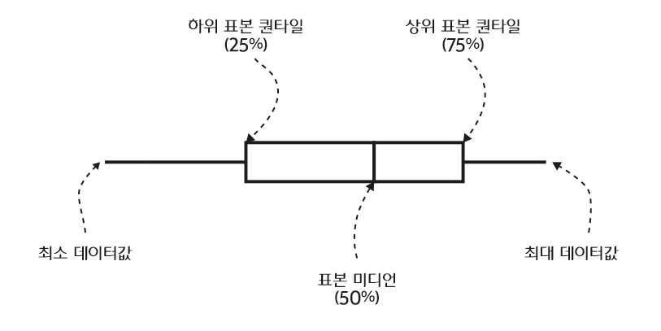

|
알메이트-차트 6.0 사용 설명서
|
박스 플롯 차트는 데이터의 분포를 표현하는 데 유용한 차트 유형이며, 백분위 수 (percentile)의 1사분위(하위 25% 이하, first quartile), 2사분위(하위 25% ~ 50%, second quartile), 3사분위(50% ~ 상위 25%, third quartile), 4사분위(상위 25% 이내, fourth quartile)의 값을 박스와 선으로 표현합니다. 아래 그림은 박스 플롯을 가로 모양으로 표현한 것입니다.
에러바 차트와 마찬가지로 박스 플롯 차트의 값에 해당하는 필드의 형식은 배열이어야 합니다.
박스 플롯 차트는 <BoxPlotChart> 노드의 series 속성값에 <BoxPlotSeries> 노드를 설정하여 생성할 수 있습니다. 다음은 <BoxPlotSeries> 노드의 주요 속성에 대한 설명입니다.
| 속성명 | 유효값 (*: 기본값) | 설명 |
|---|---|---|
| boxStroke |
박스 선의 스타일을 지정합니다. |
|
| halfWidthOffset | 숫자 |
다중 데이터 시리즈일 경우, 이웃하는 박스 사이의 공간을 픽셀값으로 지정합니다. |
| maxColumnWidth | 숫자 |
박스의 최대 넓이를 픽셀값으로 지정합니다. |
| medianStroke |
미디언 값(50%)을 표현하는선의 스타일을 지정합니다. |
|
| medianStroke |
선의 스타일을 지정합니다. |
|
| whiskerWidthRatio | 숫자 기본값: 0.5 |
수염(whisker)의 가로 크기를 박스의 가로 크기에 대한 비율로 지정합니다. |
다음은 박스 플롯 차트를 생성하는 코드와 이를 적용해서 출력한 차트의 예제입니다.
See the CodePen 알메이트 차트 - 박스 플롯 차트
다음은 두 개의 박스 플롯 데이터 시리즈를 표현하는 차트를 생성하는 코드와 이를 적용해서 출력한 차트의 예제입니다.
See the CodePen 알메이트 차트 - 다중 시리즈 박스 플롯 차트